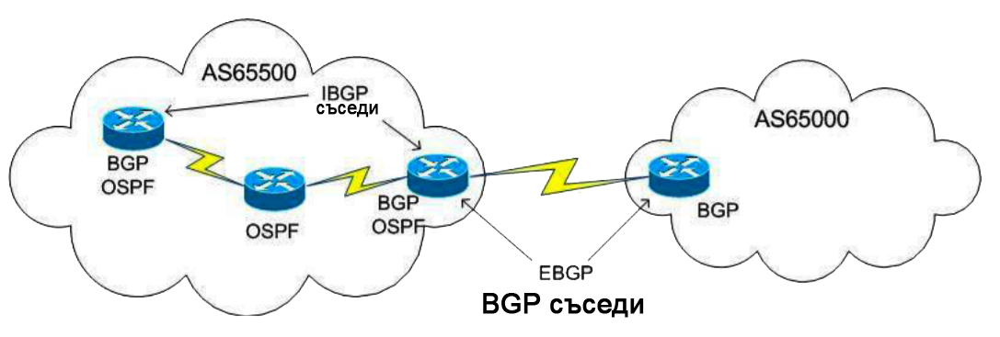

Връзки между съседи на BGP
Един BGP рутер образува директна съседна връзка с редица други BGP рутери.
Чрез тези съседи на BGP рутерът научава AS пътища в интернет мрежата, за да достигне до определени дестинационни мрежи.
Всеки рутер, на който работи BGP протокол, се нарича BGP speaker. Двата съседа на BGP директно обменят BGP информация за маршрутизиране помежду си.
BGP speaker има ограничен брой съседи на BGP, с които образува TCP връзка. BGP връзката може да бъде вътрешна или външна за автономната система, както е показано на снимката по-долу.

BGP peer се конфигурира в BGP процеса с neighbor команда